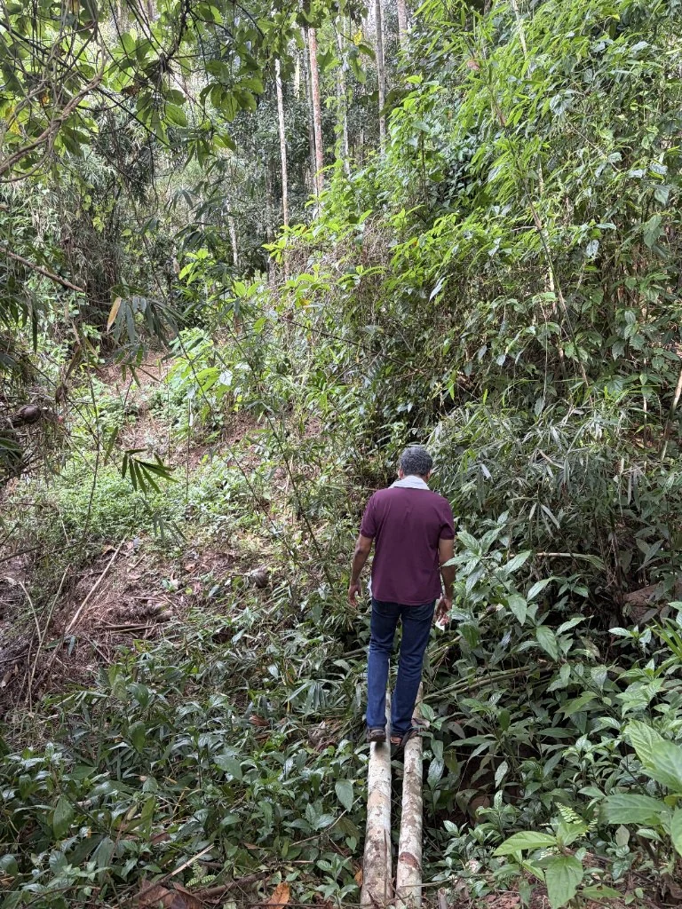
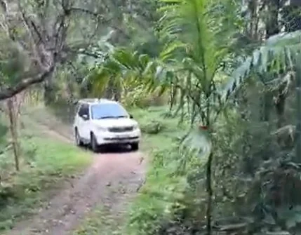
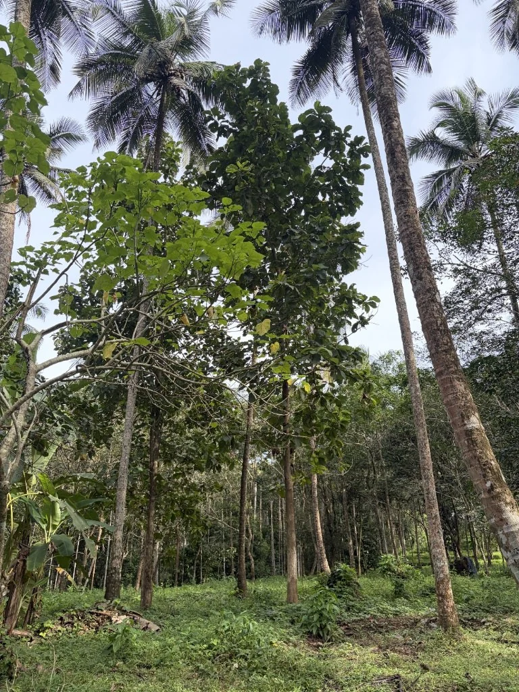

▶
Scenic aerial drone film

River, stream, approach and greenery—explore the visual character of Neeranjali.

A visual story of water, access and tropical quiet.Open full media folder ↗
 Iravanji Puzha & bathing ghat
Iravanji Puzha & bathing ghat
Adjacent perennial water stream Natural landscaped open spaces
Natural landscaped open spaces
Motorable approach
Local neighbourhood